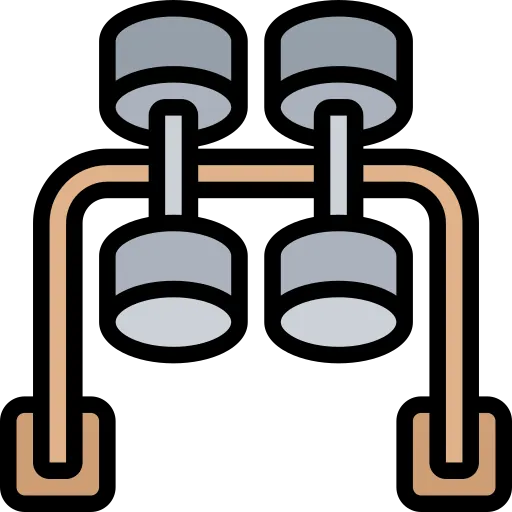

3.0㎡ 摊到地图上，是另一幅样子
全国人均 3.0㎡，听上去刚好达标。可把 31 个省一字排开，有 20 个压在均值线以下； 最高的江苏（4.46㎡）是最低的西藏（1.96㎡）的 2.3 倍。平均数，藏起了差距。
数据来源：各省/自治区/直辖市体育局《2024 年度体育场地统计调查数据公告》，经本团队据省级官方原文逐条核对； 全国均值见国家体育总局《2024 年全国体育场地统计调查数据》。底图：DataV.GeoAtlas 标准地图。逐省来源见数据说明。
全国最有钱的城市，人均场地却排到倒数第二。
上海以国家统计口径 2.43㎡ 排在第 30，仅高于西藏。土地越贵、人越密，“人均”反而越紧。 有钱，买不来运动的空间。一线城市的拥挤，和西部的稀疏，是两种完全不同的“不够”。
把 31 个省，排成一队
地图看分布，排行看位次。下面这条队列里，红线是全国均值 3.0㎡。线左侧，站着大多数。
▎ 竖红线 = 全国均值 3.0㎡/人；条形长度按 0–5㎡ 同一标尺，可直接比长短。
但这，并不是一个“东富西穷”的故事。
西部并非铁板一块：宁夏 3.51㎡ 排到全国第 3，青海、内蒙古亦不落后。但垫底的西藏、甘肃， 其短板更多来自人口稀疏、地形受限、城市化尚在路上，而非一个“穷”字就能概括的。将这幅复杂图景简化为东西之争，既不准确，也不公平。
海南排第 2，靠的是“小分母”。
人均 = 场地面积 ÷ 人口。人口少的省，天然在这个算式里占便宜。所以读这张图时要记住： 它量的是“平均每人摊到多少”，并不等于“家门口就有”。人均达标，不等于下楼找得到场地。

于是真正该问的，不是“东边还是西边”，而是“为什么差、差在哪”。
按官方四大地区将31个省聚合后，这条看不见的线会露出另一种面目。